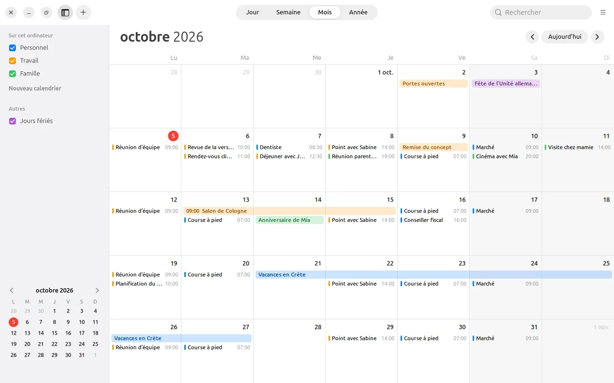
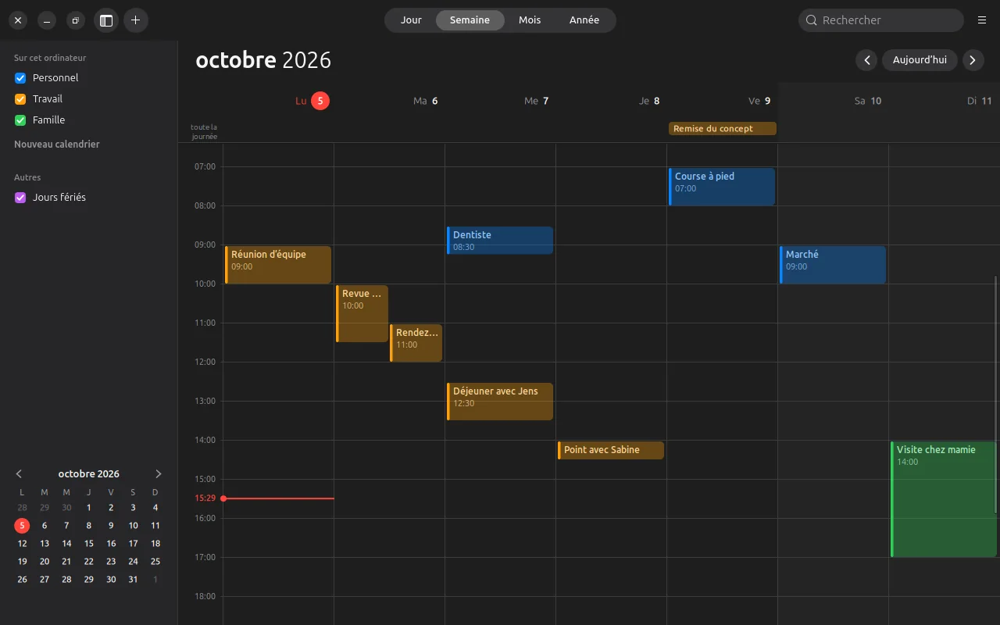
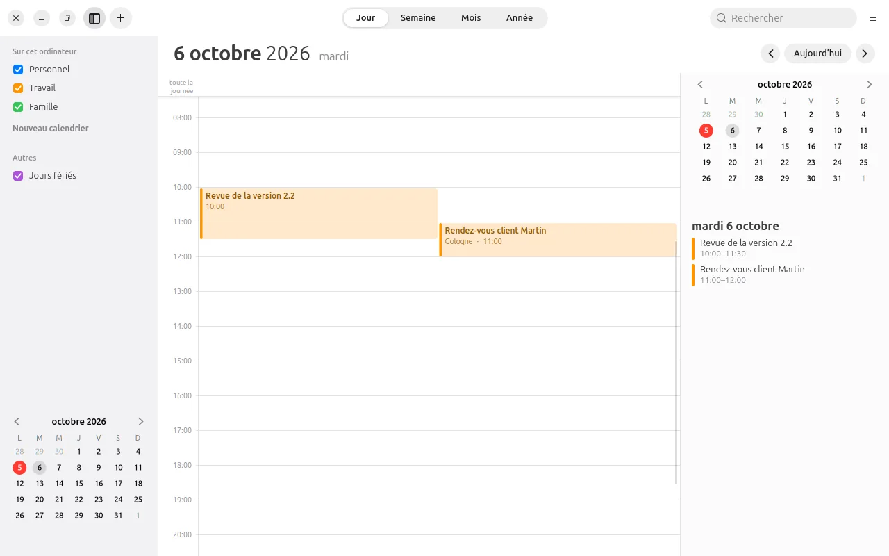
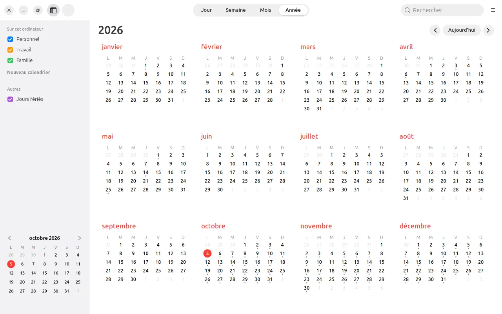
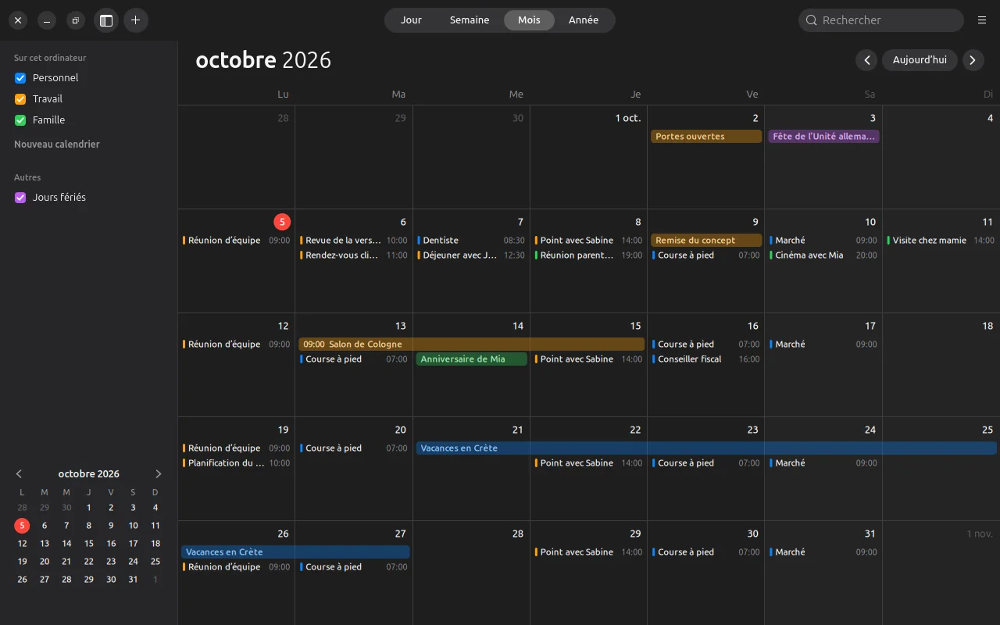
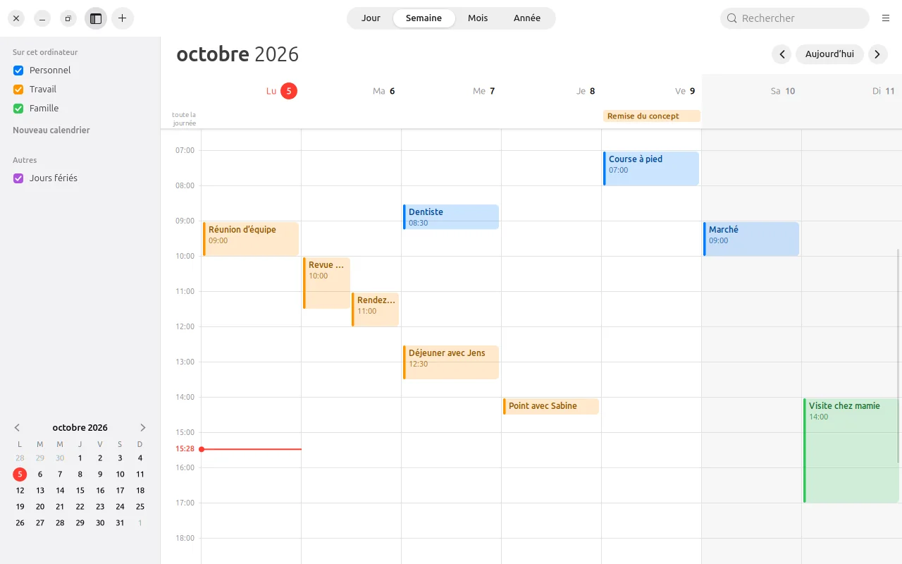

Nouveau : version 0.1.1 bêta · aide et licences sur Android
Nouveau : version 0.1.1 bêta · aide et licences sur Android
Votre journée.
En un coup d’œil.
LiCal ressemble au Calendrier d’Apple et s’utilise de la même façon.
Sous Ubuntu comme sur Mac, sous Android comme sur iPhone. Aucun compte n’est nécessaire.

Vues
Quatre vues
Jour, semaine, mois et année, en clair ou en sombre. Un trait rouge indique l’heure actuelle, les événements sur toute la journée sont en haut, et ceux à la même heure se placent côte à côte.




Événements
Un rendez-vous en une phrase
Tapez « Déjeuner avec Jens demain 12:30 » et LiCal en tire la date, l’heure et la durée. Sur l’ordinateur, un double-clic dans le calendrier crée un rendez-vous, un glisser le déplace, et la fenêtre d’infos règle le reste.
- Répétitions comme chez Apple, de quotidienne à annuelle et avec exceptions.
- Alertes avant le rendez-vous, aussi pour ceux sur toute la journée. Sur l’ordinateur, elles arrivent même quand LiCal est fermé.
- Absences avec remplaçant, pour les équipes.
- Partager par code QR : un rendez-vous d’un appareil à l’autre, sans serveur.

Fonctions
Autres fonctions
Jours fériés
Jours fériés officiels de chaque Land allemand, dans un calendrier à part que l’on peut afficher ou masquer.
Fuseaux horaires
Un rendez-vous peut être dans un autre fuseau horaire. LiCal le convertit correctement, même lors du changement d’heure.
Impression
Sur l’ordinateur, LiCal imprime un ou plusieurs mois ou une liste de rendez-vous, aussi en PDF.
Widgets
Pour l’écran d’accueil Android, il y a la date, « À suivre », le mois ou une liste, comme sur l’iPhone.
Les calendriers du téléphone
Sur Android, LiCal lit et écrit aussi les calendriers déjà présents sur l’appareil, par exemple ceux synchronisés avec DAVx⁵.
Par défaut
Les invitations (.ics) et « Ajouter un événement » d’autres apps s’ouvrent dans LiCal, sous Ubuntu et Android.
Confidentialité
Les rendez-vous restent sur l’appareil
LiCal enregistre vos rendez-vous sur votre appareil. Seul un rendez-vous que vous partagez vous-même par code QR est transmis. Les calendriers d’autres apps, comme DAVx⁵, sont synchronisés par ces apps, pas par LiCal.
Télécharger
Télécharger
Gratuit, version 0.1.1 bêta pour Ubuntu 24.04 et ultérieur ainsi qu’Android 8 et ultérieur.
Ubuntu
Décompressez et lancez linux/install.sh. LiCal apparaît alors dans le menu des applications, et son icône affiche la date du jour.
Android
Téléchargez et installez. LiCal demande le calendrier de l’appareil, les notifications pour les alertes et, quand vous scannez un code QR, l’appareil photo.
Signature de l’app
SHA-256: b53ba4b14abd79e1d31be87858fc0e9a59f13baef9a8531a01cefaddf93ebed9
Code source
Le code source complet. Vous pouvez signaler bugs et idées dans le suivi des tickets.
Sommes de contrôle : SHA256SUMS · Bêta, car LiCal n’a encore été testé que sur peu d’appareils. Les images montrent des événements d’exemple inventés.